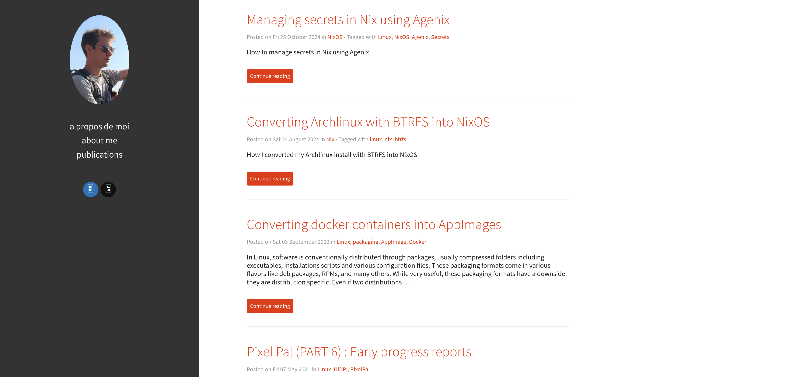

Publishing a pelican website using nix
Posted on Sun 19 January 2025 in nix
This website is statically generated using pelican and development on the website is done via nix flakes. Here is how :
Overview¶
I use pelican to publish this website. Pelican is a
python based command line tool to generate a static
website. Pelican requires writing the articles in
reStructuredText or Markdown and placing these files
in a folder which I call content. To generate
the website I simply run a command
pelican -r content -o output -s pelicanconf.py
I will not cover the details on how to install Pelican. In the
above command I specify the source folder content,
the output destination folder and finally a
configuration file called pelicanconf.py that
contain various website information like the
name of website, the locale or the theming.
While pelican is simple, it still requires a lot of small steps every time you want to publish an article. Which is why I use nix to automate as much as possible to leave as little friction.
I will explain how I use Nix flakes to manage dependencies, build the website and run it locally. I will leave publishing for possible future article.
Creating a development environment (nix-shell)¶
The purpose of a nix shell is to have a shell environment where all the tooling is installed and one can develop various helper scripts (e.g. script to run the website locally).
First I create the flake.nix file:
{
description = "Simple blog project";
inputs = {
nixpkgs.url = "github:NixOS/nixpkgs/nixos-24.11";
}
outputs = { self, nixpkgs }: let
system = "x86_64-linux";
pkgs = import nixpkgs { inherit system; }
deps = with pkgs; [
(python3.withPackages (ps: [ ps.pelican ps.markdown ]))
];
in {
devShells.${system} = pkgs.mkShell {
buildInputs = deps;
};
};
}
Basically this tells how to make a shell environment with pelican installed and markdown support. It can be invoked like this:
nix develop
pelican -r ./content -o ./dev-output -s pelicanconf.py
However, this may not work for everyone because I use an external theme.
When it is not a flake project (i.e the project root does not
have a flake.nix) we turn the external dependency into a
derivation from scratch. This can be done
using fetchFromGitHub:
{
description = "Simple blog project";
inputs = {
nixpkgs.url = "github:NixOS/nixpkgs/nixos-24.11";
}
outputs = { self, nixpkgs }: let
system = "x86_64-linux";
pkgs = import nixpkgs { inherit system; }
pelican-flex-theme = pkgs.fetchFromGitHub {
owner = "alexandrevicenzi";
repo = "Flex";
rev = "master";
sha256 = "sha256-I/WEqFMZbnJvX4NMeqB+o9LzD4im1BwOwgaqqDqbL2s=";
};
deps = with pkgs; [
pelican-flex-theme
(python3.withPackages (ps: [ ps.pelican ps.markdown ]))
];
in {
devShells.${system} = pkgs.mkShell {
buildInputs = deps;
shellHook = ''
export PELICAN_THEME=${pelican-flex-theme}
'';
};
};
}
Now after running nix develop I can access the
path to the theme via the environment
variable PELICAN_THEME (which happens to be
what I use in pelicanconf.py).
Building the website¶
Next step is to implement the build step. This
is done by specifying the packages.${system}.default
output derivation. Now
by building the website, I mean generating
the static files, not running a local instance.
Running the website locally will be explained later.
{
description = "Simple blog project";
inputs = {
nixpkgs.url = "github:NixOS/nixpkgs/nixos-24.11";
}
outputs = { self, nixpkgs }: let
system = "x86_64-linux";
pkgs = import nixpkgs { inherit system; }
pelican-flex-theme = pkgs.fetchFromGitHub {
owner = "alexandrevicenzi";
repo = "Flex";
rev = "master";
sha256 = "sha256-I/WEqFMZbnJvX4NMeqB+o9LzD4im1BwOwgaqqDqbL2s=";
};
deps = with pkgs; [
pelican-flex-theme
(python3.withPackages (ps: [ ps.pelican ps.markdown ]))
];
in {
devShells.${system} = pkgs.mkShell {
buildInputs = deps;
shellHook = ''
export PELICAN_THEME=${pelican-flex-theme}
'';
};
packages.${system}.default = pkgs.stdenv.mkDerivation {
name = "my-website";
src = ./.;
nativeBuildInputs = deps;
buildPhase = ''
export PELICAN_THEME=${pelican-flex-theme}
pelican content -o output -s pelicanconf.py
'';
installPhase = ''
mkdir -p $out
cp -r output/* $out
'';
};
};
}
Just like a Makefile we specify how to build
the project using the buildPhase and
how to install using the installPhase; all
of this within stdenv.mkDerivation.
There is however one problem with this derivation. It fetches all the files instead of only the files it needs. To fix this I use gitignore.nix which filters the source folder using the .gitignore file.
{
description = "Simple blog project";
inputs = {
nixpkgs.url = "github:NixOS/nixpkgs/nixos-24.11";
gitignore = {
url = "github:hercules-ci/gitignore.nix";
inputs.nixpkgs.follows = "nixpkgs";
};
}
outputs = { self, nixpkgs, gitignore }: let
# ... previous code omitted ...
deps = with pkgs; [
pelican-flex-theme
(python3.withPackages (ps: [ ps.pelican ps.markdown ]))
];
inherit (gitignore.lib) gitignoreSource;
in {
# ... previous code omitted ...
packages.${system}.default = pkgs.stdenv.mkDerivation {
name = "my-website";
src = gitignoreSource ./.;
nativeBuildInputs = deps;
buildPhase = ''
export PELICAN_THEME=${pelican-flex-theme}
pelican content -o output -s pelicanconf.py
'';
installPhase = ''
mkdir -p $out
cp -r output/* $out
'';
};
};
}
Now you can build the website by running the command
nix build
You can access the website in the result folder (which
is a link to the created derivation in the nix store).
Launching the website locally¶
To run the locally we define an application in
the Nix flake file. To run the website locally will be done in three
steps :
1. Create a shell script to run the website (using
nix of course)
2. Define an application in flake.nix
3. Make the shell script and the package a
dependency of the application
Here is how it is done:
{
# ... inputs ...
outputs = { self, nixpkgs, gitignore }: let
# ... previous code omitted ...
deps = with pkgs; [
pelican-flex-theme
(python3.withPackages (ps: [ ps.pelican ps.markdown ]))
];
inherit (gitignore.lib) gitignoreSource;
static-website = pkgs.stdenv.mkDerivation {
name = "my-website";
src = gitignoreSource ./.;
nativeBuildInputs = deps;
buildPhase = ''
export PELICAN_THEME=${pelican-flex-theme}
pelican content -o output -s pelicanconf.py
'';
installPhase = ''
mkdir -p $out
cp -r output/* $out
'';
};
in {
# ... previous code omitted ...
packages.${system}.default = static-website;
apps.${system}.default = let
serv = pkgs.writeShellApplication {
name = "serve";
runtimeInputs = [ static-website ] ++ deps;
text = ''
pelican --relative-urls -p 8080 -l ${static-website}
'';
};
in {
type = "app";
program =" ${serv}/bin/serve";
}
};
}
In the above code we refactor the code by moving the package
definition into the static-website variable in the
let ... in ... clause. We also create a subcomponent as
a shell application derivation called serv which
simply run the pelican local server.
To run the website locally simply do
nix run

Updating the website¶
Now if you make changes to your website (e.g. add a new
article markdown file) you may not see the changes
after running nix run or nix build, the most
likely reason for this is that flakes track the
latest state of the git repository; meaning
you may need to git add files for changes to
be reflected.
Summary¶
In this article I show how to use Nix flakes to manage the development life-cycle of a statically generated website using pelican.
Nix flakes are used to manage the development
environment (like virtual environments in Python),
build the website (like in make build) and run the
website locally (like a docker run).
For more articles about Nix and NixOS the following RSS feed is available over here.